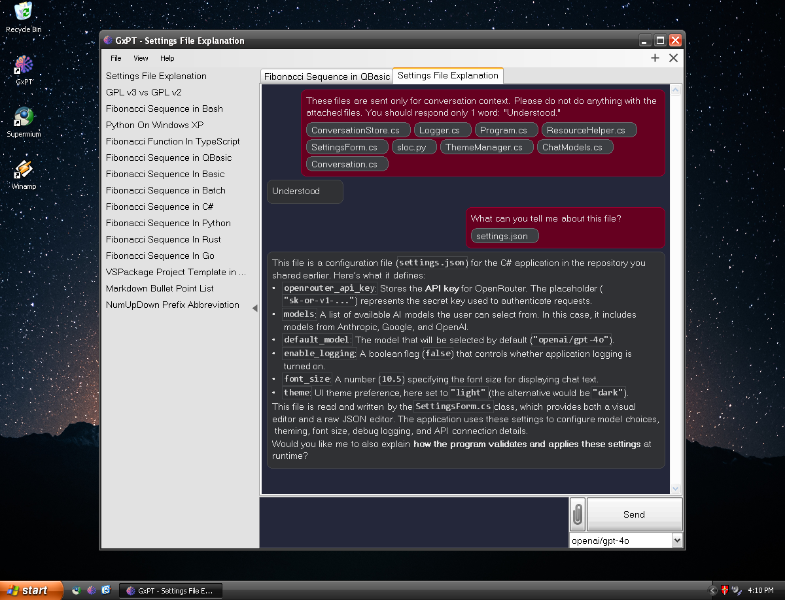
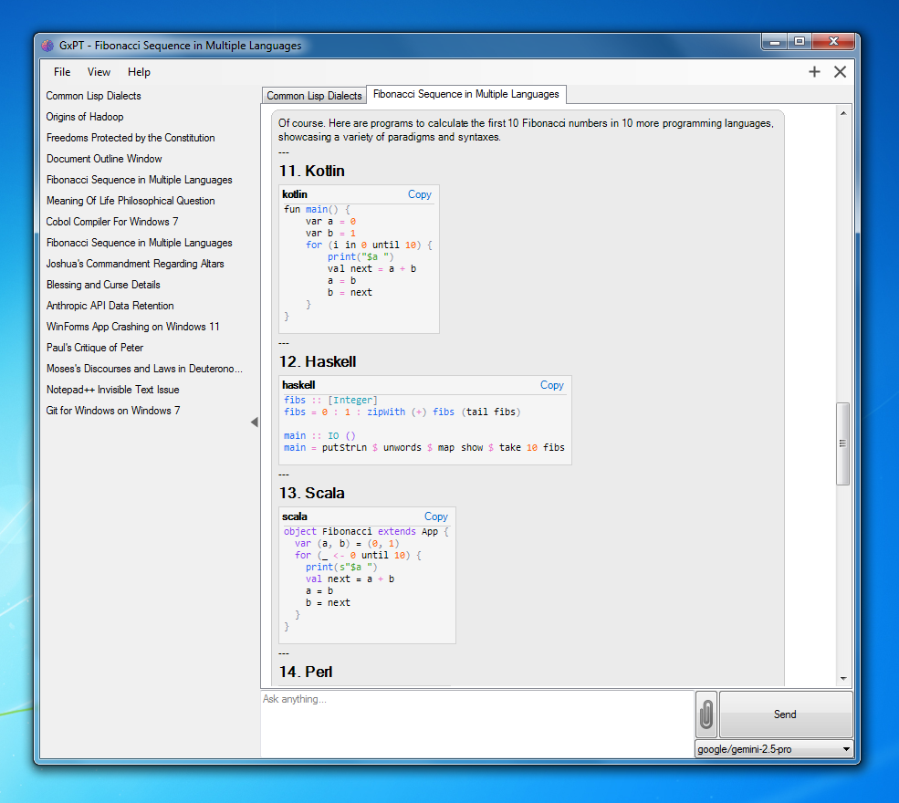

GxPT
Windows XP goes agentic!
A native chatbot client and coding agent for Windows XP. GxPT brings agentic workflows to the era of Luna and Aero — autonomously chaining tools for agentic coding and web search via the Model Context Protocol (MCP), with per-conversation privacy controls.
Get the latest installer for Windows XP or later.
Windows XP or later · .NET Framework 3.5

- Agentic Workflows — autonomously chains tool calls until your task is done: agentic coding (file/git/shell), web search, and GitHub access via MCP.
- Tool Approval & Sandboxing — every tool call is gated by an in-app approval prompt; file/git/command tools stay confined to the working folder you choose.
- Markdown & Syntax Highlighting — rich Markdown rendering plus code highlighting for 50+ languages.
- Privacy & Local Storage — conversations stored locally; enforce Zero Data Retention (ZDR) per conversation.
- Frontier Model Support — a huge range of AI models through the OpenRouter.ai API.
- Legacy Compatibility — runs on Windows XP and .NET 3.5.

